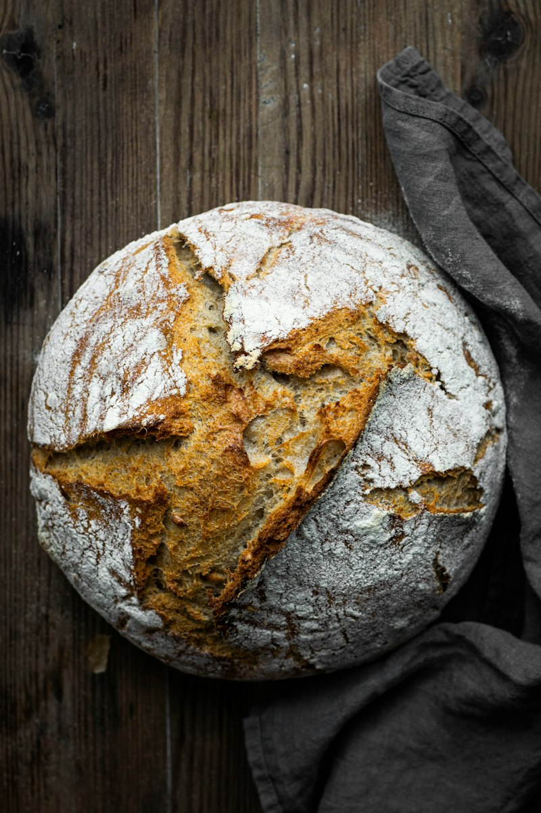

Хит пекарниТартин пшеничный «Традисьон»
Флагманский хлеб на дикой закваске. Крупнопористый шелковистый мякиш с легкой карамельной кислинкой и звонкая темно-янтарная корочка.
Мука пшеничная в/с, мука цельнозерновая, вода артезианская, живая закваска, морская серая соль.